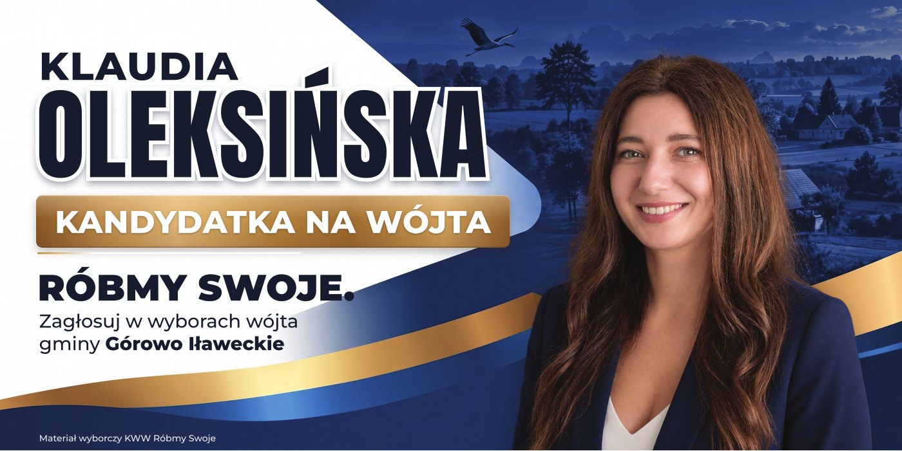
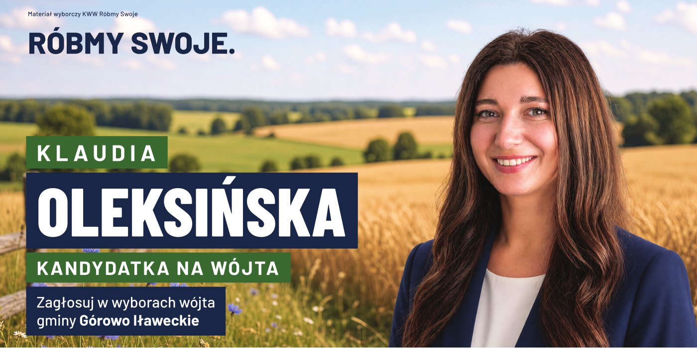

Materiały do druku
Komitet Wyborczy Wyborców Róbmy Swoje · wybory wójta gminy Górowo Iławeckie · stan na 8 października 2026 r.
Baner granatowo-złoty

400 × 200 cmPDF 1:1 · CMYK · zdjęcie 46 dpi · 23,8 MB
Pobierz PDF200 × 100 cmPDF 1:1 · CMYK · zdjęcie 91 dpi · 23,8 MB
Pobierz PDF150 × 75 cmPDF 1:1 · CMYK · zdjęcie 122 dpi · 23,8 MB
Pobierz PDFBaner sielski

400 × 200 cmPDF 1:1 · CMYK · zdjęcie 46 dpi · 36,3 MB
Pobierz PDF200 × 100 cmPDF 1:1 · CMYK · zdjęcie 91 dpi · 36,3 MB
Pobierz PDF150 × 75 cmPDF 1:1 · CMYK · zdjęcie 122 dpi · 36,3 MB
Pobierz PDF- Skala 1:1, napisy zamienione na krzywe, zdjęcia osadzone w pliku.
- Pliki są bez spadów i bez zapasu na zgrzew i oczka. Jeśli zapas jest potrzebny, prosimy o wymiar, dodamy go.
- Profil barwny: standardowy CMYK bez osadzonego profilu docelowego. Na życzenie przygotujemy pliki pod wskazany profil.